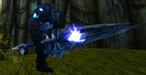

Made by Axel
Thunderfury, Blessed Blade of the Windseeker is the legendary sword once wielded by Thunderaan, Prince of Air. The prince, son of Al'Akir the Windlord, was attacked by Ragnaros the Firelord, in an attempt to heighten the already impressive power that the fire elemental held. Ragnaros succeeded; however, Thunderaan's power could not be completely taken into his form. What remained of Thunderaan was placed in a talisman of elemental binding, which was broken into two pieces. The pieces were then given to the Firelord's two lieutenants, Baron Geddon and Garr, respectively the left and right halves. These two halves are known as the Bindings of the Windseeker.
*Added in patch 1.11.1 "Shadow of the Necropolis"